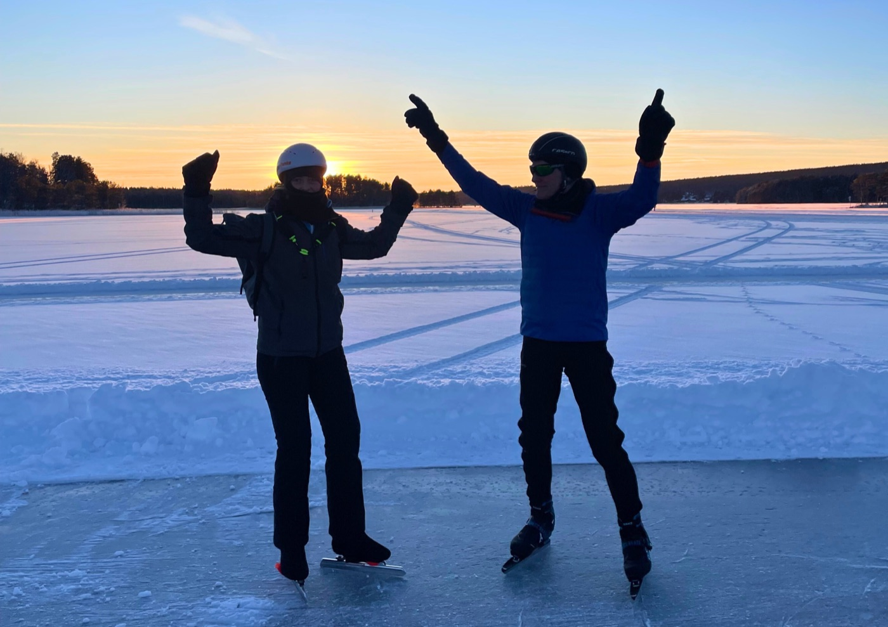

Orsa
An independent skating trip on Lake Orsa, with a swept track of about 15 km. The flight, accommodation in cabins right by the ice and local transport are included. From €995.
View this trip
An independent skating trip on Lake Orsa, with a swept track of about 15 km. The flight, accommodation in cabins right by the ice and local transport are included. From €995.
View this trip


An independent package trip on historic ice, with Falun's red mine buildings in the background. The flight, rental car and accommodation are included. From €995.
View this trip


An independent skating trip without a guide on Lake Saimaa near Punkaharju, staying in your own cabin with sauna. From €895.
View this trip

Independent skating on a mountain lake in Carinthia, known from the Alternative Elfstedentocht. From €1,095.
View this trip


An individual, independent skating trip on the public natural ice route along the frozen Gulf of Bothnia. No guide or fixed programme; you decide how long you travel and how you fill your days. From €1,095.
View this tripNatural ice can't be planned. You skate independently and plan your own day, based on the weather and the current ice information. For Orsa, our online service helps you with information about the ice, alternative skating locations and weather updates.

You skate independently, at your own pace, and plan your days yourself.
Years of experience on natural ice, and personal advice before you leave.
For Orsa, Falun, Finland and the Weissensee, the flight, the accommodation and local transport are included in the trip. For Luleå, the flight and the hotel are included.


"Being outside, in nature - that's what it's all about for me. Skating on natural ice gives an unmatched sense of freedom."
Joey has been skating since he was a child and built up years of experience on natural ice. He later trained as a sports instructor and gained experience at the 11shop in the Elfstedenhal, working with skating equipment and sharpening.
But in the end, it's no longer about performance for him - it's about experiencing the skating and the nature around it. In the Netherlands, good natural ice is becoming rarer; in Sweden and Finland you can still skate on and on.
Joey Novak
Founder and travel guide

Real feedback from previous participants, straight from our Google page.
View all reviews on GoogleThe best moment differs per destination and per winter. In Scandinavia the winter is usually longer than in the Netherlands, but natural ice still depends on temperature, snow, wind and the conditions on site.
You don't have to be a competitive skater, but you do need to be able to skate independently and in control. Because you skate independently, you also need to be able to judge for yourself whether the ice is safe. If you're unsure about your level, Joey will think it through with you beforehand.
Natural ice always calls for good assessment and preparation. Conditions can differ locally and change over the course of a day. You skate independently, so you judge the ice yourself and keep checking the current information on site. Ice picks and a helmet are mandatory.
Natural ice always depends on the weather and the quality of the ice, and can never be guaranteed in advance. For Orsa, our online service gives you current information about the ice, all alternative skating locations and weather updates, plus information about alternative activities.
Yes, depending on the trip and your skating experience. All trips are independent as standard, without guidance on the ice. They are therefore best suited to skaters who can judge the current conditions for themselves. At Orsa and Falun you can add guidance on the ice. Guided group trips are still being planned.
You bring your own skating equipment, winter clothing and safety gear. You'll receive a packing list and advice on what you need beforehand. For natural ice we recommend touring skates; ice picks and a helmet are mandatory.
You pay the full trip price in one go at booking. Cancel more than 6 weeks in advance and you pay 50% of the trip price; after that, 100% applies.
Not sure which trip suits you? Ask Joey for advice
Fill in the form and Joey will contact you personally.

Technique and tempo, in small groups or one-on-one.
More about skating lessons
Expertly sharp and properly adjusted, by a former equipment specialist.